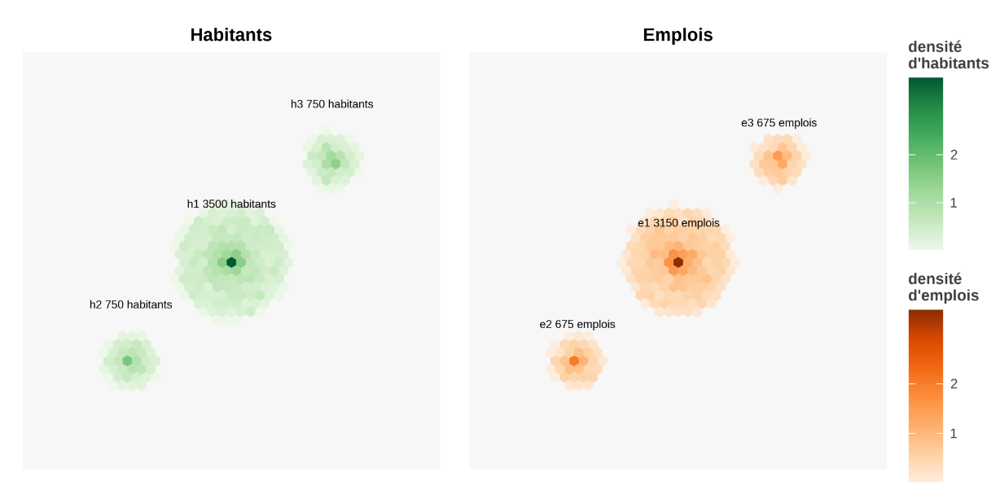
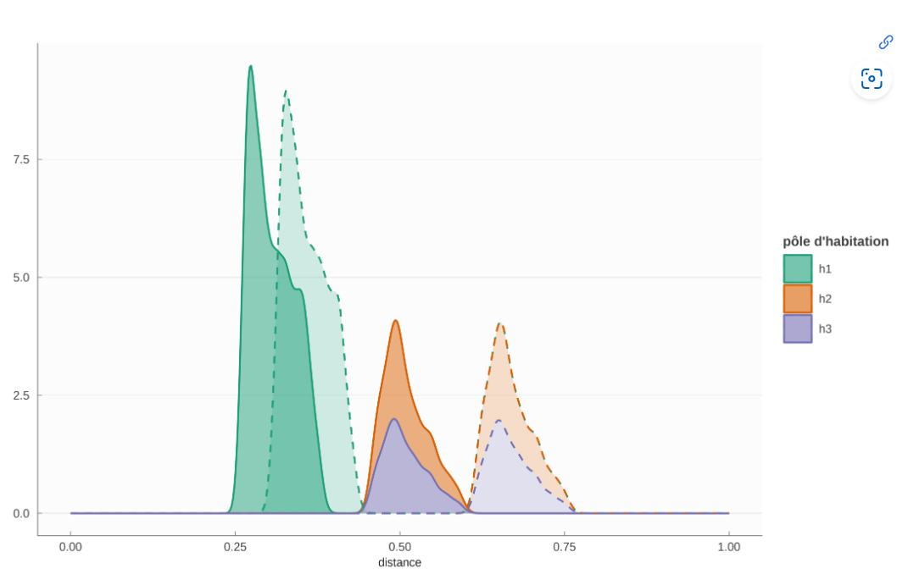
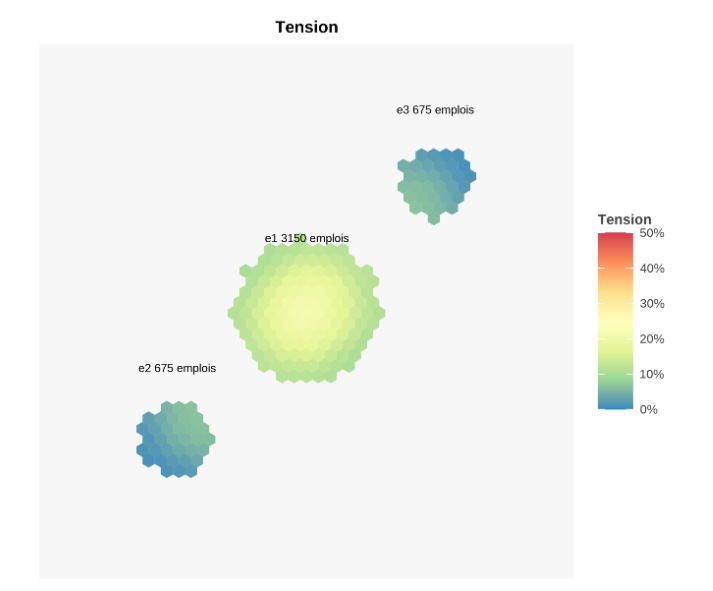
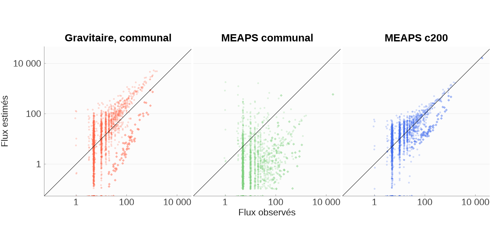
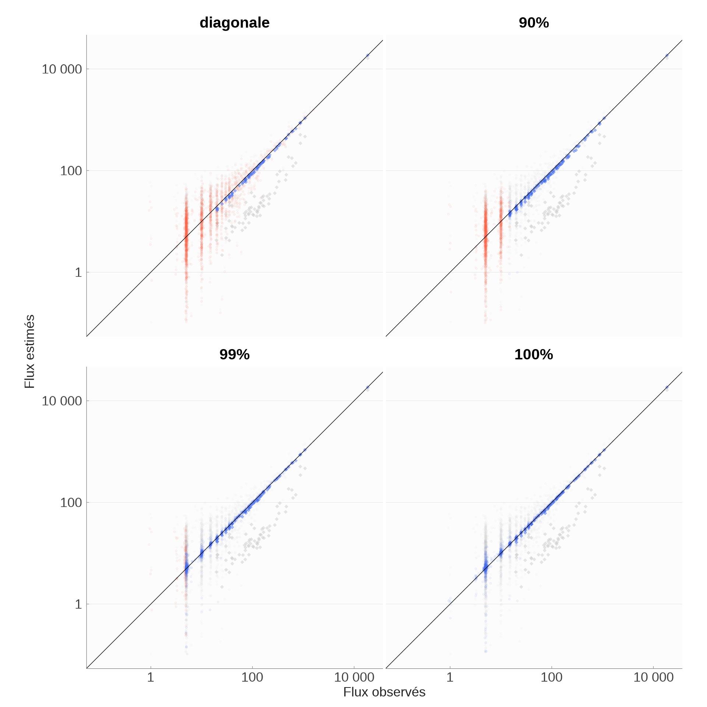

Mais le modèle gravitaire “écrase” l’information proprement spatiale et marche surtout “de loin”.
Il donne la même valeur à la distance quelque soit la densité du milieu traversé. Or, quand on est isolé, on accepte des distances plus grandes.
Gravitaire versus radiatif
On propose d’utiliser une autre analogie : le modèle radiatif de (Simini et al. 2012) ou des “opportunités intervenantes” de (Stouffer 1940)
Dans cette analogie, au lieu d’avoir des masses qui s’attirent (A et B), le trajet entre A et B est influencé par les Cs que l’on rencontre en chemin.
Analogie physique : une particule est émise d’un point. Elle parcourt l’espace jusqu’à rencontrer des sites d’absorption. A chaque site d’absorption elle peut être absorbée (probabilité \(p\)) ou continuer (probabilité \(1-p\)).
Mais un milieu linéarisé : au lieu d’une particule partant dans une direction quelconque, on classe sur une droite tous les sites d’absorption en fonction de leur distance. Ils seront rencontrés dans cet ordre. Ceci permet de représenter l’influence de la distance, puisque ce qui est près compte plus que ce qui est loin.
Plan de la présentation
Nous proposons un Modèle Ergodique à Absorption, Priorité et Saturation (/mi:ps/)
Le modèle théorique
Version simple
Priorité et saturation
Ergodicité
Algorithme
Simulations synthétiques pour en étudier les propriétés
une application Shiny
Estimations à partir de MOBPRO à La Rochelle
données
\(R^2_{KL}\) et quelques autres éléments
Apprentissage (ou estimation non paramétrique)
Estimations paramétriques
Conclusions
Modèle Ergodique à Absorption, Priorité et Saturation
Pourquoi MEAPS ?
Modèle Ergodique à Absorption, Priorité et Saturation
Simulations Synthétiques
Estimations
Conclusions
Absorption
Pour chaque individu, les emplois sont classés dans l’ordre des distances, chaque emploi a un rang \(r_i(j)\) et une probabilité d’absorption uniforme \(p_a\). La probabilité de dépasser au moins \(j\) s’écrit :
\[
\bar F(j)=(1-p_a)^{r_i(j)}
\]
On peut définir une fuite, c’est-à-dire la probabilité de ne pas s’arrêter dans le périmètre d’étude (fini)
\[
p_a = 1-(p_f)^{1/J}
\]
La probabilité de s’arrêter en \(j\) peut alors s’écrire :
Si la densité des opportunités (les emplois) est uniforme, on peut calculer \(s_i(d)=r^2/\rho^2\) et (re)trouver une forme “gravitaire” qui dépend de la distance.
Pour ne pas dépendre d’un ordre particulier, nous faisons la moyenne sur tous les ordres possibles. Aucun résident n’est privilégié, la moyenne sur tous les ordres possibles donne une solution acceptable.
Il y a \(I!\) ordres possibles ce qui est impossible à traiter.
On prend donc un (petit) échantillon de ces ordres et on conjecture l’ergodicité du modèle : un faible nombre de tirages permettra d’atteindre la moyenne sur tous les ordres.
Intuitivement, chaque individu est localisé aléatoirement, la saturation dépend surtout de la coïncidence d’individus proches d’une opportunité et qui sont donc les premiers servis. Cette coïncidence est rare et donc quelques tirages conduisent à un résultat proche de tous les tirages.
Quelques aspects informatiques
Le modèle n’admet pas de solution fermée. La simulation est incontournable, notamment pour prendre en compte les données riches géographiques (réseaux de transport, localisation des emplois, des individus).
L’algorithme a été implémenté en C++ en utilisant la parallélisation pour le Monte-Carlo avec OpenMP. Avec les optimisations que nous avons réussi à implémenter, pour un problème de la taille de La Rochelle, il faut 20s pour une simulation sur 256 tirages avec 4 threads.
Le code est dans le package R {rmeaps}
github.com/maxime2506/rmeaps
Simulations Synthétiques
Pourquoi MEAPS ?
Modèle Ergodique à Absorption, Priorité et Saturation
Simulations Synthétiques
Estimations
Conclusions
Simulations synthétiques
On génère une distribution aléatoire, avec une répartition spatiale des individus, des emplois, des distances et des rangs. On peut simuler le modèle et l’agréger à une maille choisie.
On peut analyser l’ergodicité ou définir une tension et plein d’autres choses.



Une application interactive
Estimations
Pourquoi MEAPS ?
Modèle Ergodique à Absorption, Priorité et Saturation
Simulations Synthétiques
Estimations
Conclusions
Données à La Rochelle
MOBPRO (2022), fichier détail du recensement. Donne pour chaque commune de résidence, la commune principale d’activité de chaque résident. On interprète ça comme un flux. 72 communes de résidence, 210 communes d’emploi.
localisation des résidents au carreau 200m (données carroyées de l’INSEE) (5475 carreaux de résidence)
localisation des emplois au carreau 200m (MOBPRO+fichiers fonciers en localisant en fonction des surfaces d’activité par 5 NAF, à proportion des surfaces de chaque commune) (6236 carreaux d’emplois)
Distances
On évalue les distances entre chaque paire de carreau 200m pour 4 modes de transport
On va comparer des flux entre eux et on aimerait avoir un critère à maximiser pour les ajustements. On utilise l’entropie “relative” de Kullback-Leibler, \(p\) et \(q\) sont deux distributions :
\[
KL(p,q) = \sum_{i}p_i \times log(p_i/q_i)
\]
Kolmogorov-Smirnov (KS) est une alternative. Nous préferrons KL à KS parce que KS repose sur le maximum d’écart entre deux distributions et est donc une métrique discontinue. KL pose un problème pour les 0 (que l’on enlève) et n’est pas une distance.
A partir de KL on peut définir un \(R^2_{KL}\) suivant Colin Cameron et Windmeijer (1997) en utilisant la distribution uniforme comme point de référence (analogue à une constante pour un \(R^2\) de régression linéaire) :
Le \(R^2_{KL}\) pour le modèle gravitaire est de 77,8%, Le \(R^2_{KL}\) pour MEAPS c200 est de 88,4%.

Apprentissage ou estimation non paramétrique versus estimation paramétrique
On introduit des modifications de la probabilité d’absorption : \[
\tilde{p}_{abs,ij} = \frac{c_{abs} \times \omicron_{ij}} {1+c_{abs} \times \omicron_{ij}}
\]
Si on estime tous les \(\omicron_{ij}\), \(i\) et \(j\) parcourant les communes de résidence et d’emploi, on a un problème de grande dimensionalité. Pas d’optimisation directe possible, on utilise un algorithme approché (à la machine learning).
Un tel algorithme est :
On impose une structure paramétrique de faible dimension (1 ou 2 dans nos exemples) et on peut faire une optimisation numérique. La structure peut relier les \(\omicron_{ij}\) à la distance, au voisinage, etc…
Apprentissage : résultats (1)
R2KL
Degrés de liberté
odds estimés
Référence (odds unitiaires)
88.4%
1 752
0
Diagonale (résidence égale emploi)
95.0%
1 681
71
90% des flux cumulés
97.4%
1 027
725
99% des flux cumulés
99.3%
0
1 849
100% des flux cumulés
99.6%
0
2 029
Apprentissage : résultats (2)

Apprentissage : résultats (3)
Apprentissage : résultats (4)
Estimations paramétriques : modèles
Communes diagonales : flux allant d’une commune de résidence vers elle-même pour l’emploi.
\(\omicron_{i \neq j}=1\) et \(\omicron_{ii} = o\).
Communes diagonales et voisines : 1+ une commune est voisine d’une autre si au moins 5% des trajets pondérés par les emplois et les résidents ont une distance kilométrique inférieure à 3km.
\(\omicron_{ii} = o_d\); \(\omicron_{ij\in \mathcal{V}(i)} = o_v\) et \(\omicron_{i, j \neq i, j \notin \mathcal{V}(i)} = 1\).
Un coefficient en deça d’une distance et un paramètre pour cette distance de “bascule”.
Modèle Ergodique à Absorption, Priorité et Saturation
Simulations Synthétiques
Estimations
Conclusions
Conclusion (1)
MEAPS dispose de microfondements (analogie radiative) et d’une agrégation explicite et flexible qui peut s’appliquer à plusieurs situations :
d’autres granularités, plusieurs niveaux de maille
d’autres opportunités comme les écoles (en cours), les commerces… en modifiant les processus de recherche ou en enlevant la saturation
Conclusion (2)
MEAPS permet une (bien) meilleure performance empirique que le modèle gravitaire sur MOBPRO à l’échelle du “bassin de vie” et pour les mobilités quotidiennes.
On peut interpréter le biais intra-communal, le comparer entre territoires ou dans le temps.
On pourrait utiliser la variance des territoires, ou la variance temporelle, ou des chocs exogènes pour en faire une analyse causale.
On pourrait utiliser des informations plus fines (traces numériques, relevés de trafic routier, enquêtes locales) pour un calage plus fin, à intégrer éventuellement avec la maille communale.
Conclusion (3)
On peut produire :
un chiffre agrégé plus fiable que les estimations habituellement produites. L’évaluation sur MOBPRO a une résolution spatiale trop faible, on peut gagner en précision grâce à l’interpolation et l’utilisation d’une information sur la géographie (localisation des résidents, des emplois, réseaux).
une intrapolation (robuste) en se calant sur les données à la maille commune et en utilisant l’information géographique (carte de CO2 , ville du 1/4 d’heure par exemple).
on peut dériver des indicateurs comme la tension sur les emplois, localisés et agrégés à une maille quelconque.
Références
Bibliographie
Colin Cameron, A., et Frank A. G. Windmeijer. 1997. « An R-Squared Measure of Goodness of Fit for Some Common Nonlinear Regression Models ». Journal of Econometrics 77 (2): 329‑42. https://doi.org/10.1016/s0304-4076(96)01818-0.
MOBPRO. 2022. « Mobilités professionnelles en 2019 : déplacements domicile - lieu de travail Recensement de la population - Base flux de mobilité ». INSEE; https://www.insee.fr/fr/statistiques/6454112.
Simini, Filippo, Marta C. González, Amos Maritan, et Albert-László Barabási. 2012. « A Universal Model for Mobility and Migration Patterns ». Nature 484 (7392): 96‑100. https://doi.org/10.1038/nature10856.
Stouffer, Samuel A. 1940. « Intervening Opportunities: A Theory Relating Mobility and Distance ». American Sociological Review 5 (6): 845. https://doi.org/10.2307/2084520.